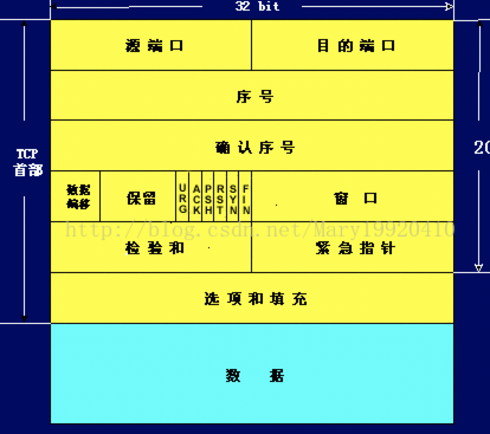

前言
本文主要对一些关于三次、四次握手和TCP报文比较好的文章，和自己的一些理解做了一个整理，然后对常见问题做出回答
TCP报文格式
]
TCP报文长度
IP数据报中有一个16位的字段表示IP数据报的长度
(16位是表示可以用16位表示65535个不同的数来标记字节，不是用16位存储)
所以IP数据报最大长度=2^16-1=65535（字节）
TCP报文段的数据部分= IP数据报最大-IP数据报首部-TCP报文段的首部=65535-20-20=65495（字节）
所以一个tcp报文段的最大长度是65515字节
TCP报文详解
- 端口号d：用来标识同一台计算机的不同的应用进程。
源端口：源端口和IP地址的作用是标识报文的返回地址。
目的端口：端口指明接收方计算机上的应用程序接口。
TCP报头中的源端口号和目的端口号同IP数据报中的源IP与目的IP唯一确定一条TCP连接。 - 序号和确认号：是TCP可靠传输的关键部分
- 序号是本报文段发送的数据组的第一个字节的序号。在TCP传送的流中，每一个字节一个序号。e.g.一个报文段的序号为300，此报文段数据部分共有100字节，则下一个报文段的序号为400。所以序号确保了TCP传输的有序性。
- 确认号即ack，指明下一个期待收到的字节序号，表明该序号之前的所有数据已经正确无误的收到。确认号只有当ACK标志为1时才有效。
- 序号为什么要随机？
如果是从0或1开始，黑客就可以很简单的伪造一个数据报对接收端攻击 - SYN和FIN为什么占一个序号？
只有数据字节才编号，而头部的20字节是不编号的，而SYN和FIN各占一个序号，ACK等都不占序列号，因为ack机制是需要通过说明”到某个序列号为止的数据已经收到”，如果SYN和FIN没有长度，就没办法ack了
也正是因为SYN和FIN各占一个序号，所以三次握手的时候，ack是x+1（ack是期待收到下一个报文段的序号） - 数据偏移／首部长度：4bits。由于首部可能含有可选项内容，因此TCP报头的长度是不确定的，报头不包含任何任选字段则长度为20字节，4位首部长度字段所能表示的最大值为1111，转化为10进制为15，15*32/8 = 60，故报头最大长度为60字节。首部长度也叫数据偏移，是因为首部长度实际上指示了数据区在报文段中的起始偏移值。
- 保留：为将来定义新的用途保留，现在一般置0。
- 控制位：URG ACK PSH RST SYN FIN，共6个，每一个标志位表示一个控制功能。
ACK：确认序号标志，为1时表示确认号有效，为0表示报文中不含确认信息，忽略确认号字段。
SYN：同步序号，用于建立连接过程，在连接请求中，SYN=1和ACK=0表示该数据段没有使用捎带的确认域，而连接应答捎带一个确认，即SYN=1和ACK=1。
FIN：finish标志，用于释放连接，为1时表示发送方已经没有数据发送了，即关闭本方数据流。 - 校验和：奇偶校验，此校验和是对整个的 TCP 报文段，包括 TCP 头部和 TCP 数据，以 16 位字进行计算所得。由发送端计算和存储，并由接收端进行验证。
- 选项和填充：最常见的可选字段是最长报文大小，又称为MSS（Maximum Segment Size），每个连接方通常都在通信的第一个报文段（为建立连接而设置SYN标志为1的那个段）中指明这个选项，它表示本端所能接受的最大报文段的长度。选项长度不一定是32位的整数倍，所以要加填充位，即在这个字段中加入额外的零，以保证TCP头是32的整数倍。
- 数据部分：TCP报文段中的数据部分是可选的。在一个连接建立和一个连接终止时，双方交换的报文段仅有TCP首部。（SYN和FIN占一个序号而不是占一个数据字节）
三次握手过程
第一次握手：建立连接时，客户端发送syn包（syn=x）到服务器，并进入SYN_SENT状态，等待服务器确认；SYN：同步序列编号（Synchronize Sequence Numbers）。
第二次握手：服务器收到syn包，必须确认客户的SYN（ack=x+1），同时自己也发送一个SYN包（syn=y），即SYN+ACK包，此时服务器进入SYN_RECV状态；
第三次握手：客户端收到服务器的SYN+ACK包，向服务器发送确认包ACK(ack=y+1），此包发送完毕，客户端和服务器进入ESTABLISHED（TCP连接成功）状态，完成三次握手。
四次握手
1）客户端进程发出连接释放报文，并且停止发送数据。释放数据报文首部，FIN=1，其序列号为seq=u（等于前面已经传送过来的数据的最后一个字节的序号加1），此时，客户端进入FIN-WAIT-1（终止等待1）状态。 TCP规定，FIN报文段即使不携带数据，也要消耗一个序号。
2）服务器收到连接释放报文，发出确认报文，ACK=1，ack=u+1，并且带上自己的序列号seq=v，此时，服务端就进入了CLOSE-WAIT（关闭等待）状态。TCP服务器通知高层的应用进程，客户端向服务器的方向就释放了，这时候处于半关闭状态，即客户端已经没有数据要发送了，但是服务器若发送数据，客户端依然要接受。这个状态还要持续一段时间，也就是整个CLOSE-WAIT状态持续的时间。
3）客户端收到服务器的确认请求后，此时，客户端就进入FIN-WAIT-2（终止等待2）状态，等待服务器发送连接释放报文（在这之前还需要接受服务器发送的最后的数据）。
4）服务器将最后的数据发送完毕后，就向客户端发送连接释放报文，FIN=1，ack=u+1，由于在半关闭状态，服务器很可能又发送了一些数据，假定此时的序列号为seq=w，此时，服务器就进入了LAST-ACK（最后确认）状态，等待客户端的确认。
5）客户端收到服务器的连接释放报文后，必须发出确认，ACK=1，ack=w+1，而自己的序列号是seq=u+1，此时，客户端就进入了TIME-WAIT（时间等待）状态。注意此时TCP连接还没有释放，必须经过2MSL（最长报文段寿命）的时间后，当客户端撤销相应的TCB后，才进入CLOSED状态。
6）服务器只要收到了客户端发出的确认，立即进入CLOSED状态。同样，撤销TCB后，就结束了这次的TCP连接。可以看到，服务器结束TCP连接的时间要比客户端早一些。
一些面试题自己的回答
- 为什么连接是三次握手，结束是四次握手？
因为连接的时候，Server收到了SYN连接请求的时候，可以直接ASK并SYN（回应并同步连接），但是结束的时候，ServerASK完了以后，还要把剩下的数据传输完才会发送FIN终止连接请求 - 为什么四步完了有一个2MSL的等待时间
我们要假设网络是不可靠的，那第四步的ACK可能会丢失
如果Server没有收到第四步的ACK,就会重新第三步的FIN请求关闭，所以等2MSL（一来回的时间）客户端还没收到FIN,说明Server已经收到第四步的ASK并且关闭了。 - 为什么前面的不怕丢失？
因为前面都是确认收到才进行下一步，第四步不确定Server收没收到，要等一个来回的时间看server是否重新传FIN重传机制
TCP本身需要提供可靠的服务，方式之一就是确认接收方真的收到了数据，如果过了一段时间，即超时了，还没有收到确认的报文，认为报文可能被丢失，就重新传送报文，确保数据都能被收到 - 为什么不是两次握手
因为第二步可能会丢失，如果不第三次握手，确认client已经接收到server的回应和同步，客户端就不知道server是否准备好，也不知道server的序列号，导致也不确定自己的发送对方是否收到。
所以client认为没有建立连接，就会忽略Server发来的数据，只等待它需要的第二步
而server发送数据超时后，就会重复发送造成死锁 - 如果已经建立连接，客户端故障怎么办
TCP还设有一个保活计时器，显然，客户端如果出现故障，服务器不能一直等下去，白白浪费资源。
服务器每收到一次客户端的请求后都会重新复位这个计时器，时间通常是设置为2小时，若两小时还没有收到客户端的任何数据，服务器就会发送一个探测报文段，以后每隔75秒钟发送一次。若一连发送10个探测报文仍然没反应，服务器就认为客户端出了故障，接着就关闭连接。